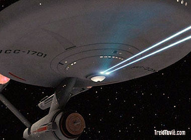
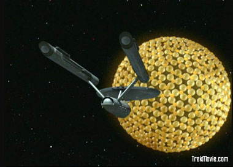
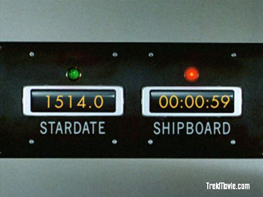
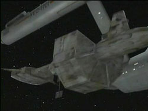

|

Publicado em
1º de janeiro de 2007

Em cores... e muito além
disso
Série
remasterizada é relançada na TV com efeitos renovados

|
A Srie Clssica de Jornada nas Estrelas, programa de televiso dos anos 60, foi um dos primeiros seriados produzidos a cores. Televisão colorida ainda era novidade e, como conseqncia, muitos dos primeiros fs, daqui ou de fora, assistiram aos primeiros episdios em branco e preto (B&W). Com a proliferao das TVs coloridas, at meados dos anos 80 praticamente j era natural assistir a srie em seu formato original, em cores. Mas as inovaes tecnolgicas de udio e vdeo no pararam por a e, naturalmente, o seriado se beneficiaria dos novos formatos que surgiriam no mercado. H alguns anos, escrevi uma matria para o Trek Brasilis a respeito da evoluo da Srie Clssica no mercado de home-video, desde o VHS, passando pelo LaserDisc at, finalmente, no DVD. No final do texto, previ que era questo de tempo at que a srie ressurgisse em novo formato, com alta definio de som e imagem. Enfim, o momento chegou, mais rpido do que se esperava, trazendo alm de outras surpresas conforme veremos na seqncia. Antes de mais nada, faz-se necessria uma breve exposio sobre os formatos de vdeo e udio de alta definio. Hoje, existem diversas fontes de vdeo em alta definio, principalmente em razo da proliferao dos mais variados formatos digitais. Temos as transmisses televisivas (mas ainda no no Brasil), HD-DVD (um dos sucessores do DVD), Blu-Ray (outro sucessor do DVD, talvez o prximo Betamax), Windows Media (pode exibir vdeos codificados em alta resoluo) e, finalmente, QuickTime HD (programa de vdeo da Apple, similar ao do Windows). Enquanto o formato do DVD alcana a resoluo mxima de 720x480 (o que definido como 480i interlaced - ou 480p progressive), esses novos formatos podem ser exibidos em 720i, 720p, 1080i e 1080p. Alm disso, os discos de HD-DVD tm 30Gb e os de Blu-Ray 50GB, o que garante mais espao de dados para os filmes, ou seja, melhor imagem e menos compresso de vdeo. Os atuais discos de DVD tm limite de 18Gb, mas isso, os de dupla camada com dois lados. Um DVD comum de dupla camada, o chamado DVD-9, tem espao para cerca de 9 Gb de material. Saindo do campo tcnico, vamos analisar como a Srie Clssica est se enquadrando no formato de alta resoluo. Acredito que a maioria dos leitores, seno todos, tenham adquirido (ou pelo menos pego emprestado, ou alugado) os episdios em DVD que a Paramount lanou em 2005 no Brasil. Todos podem confirmar o esplendor da imagem. Excelente definio, cores fortes e vivas. Todos os episdios passaram por recente restaurao e o trabalho pde ser demonstrado com perfeio no formato do DVD. E poderia ser melhor ainda? Por incrvel que parea, a resposta sim!  Em setembro de 2006, a rede americana CBS passou a exibir a Srie Clssica com dois diferenciais: alta resoluo (para quem tem HDTV) e, surpresa na poca, novos efeitos especiais. O primeiro diferencial inerente ao desenvolvimento de home-video, razo pela qual s h motivos para festejar. Por outro lado, o segundo diferencial razo para descontentamento. Tratando em primeiro lugar da imagem, a exibio da Srie Clssica em alta definio um verdadeiro show. Muito superior ao DVD, a imagem rica em definio, trazendo tona detalhes talvez antes no percebidos, como texturas de peles e roupas. O fato da Srie Clssica ter sido filmada em 35mm, com negativos bem preservados at os dias atuais, contribuiu na apresentao estupenda em alta resoluo. mera questo de tempo para que a srie seja relanada em HD-DVD e/ou Blu-Ray. O problema da atual exibio na CBS reside nos novos efeitos especiais. Durante anos, os fs especularam sobre a possibilidade da Srie Clssica voltar s telas com novos e atuais efeitos especiais, gerados por computao grfica CGI. A idia nasceu com a exibio do extraordinrio episdio Trials and Tribble-ations de Deep Space Nine, que recriou os eventos do clssico The Trouble of Tribbles atravs de efeitos de ltima gerao. A Enterprise, tanto externa como internamente, foi recriada em CGI, o que demonstrou de forma incontestvel que o design da srie, dos anos 60, se mantinha muito bem atual nos dias atuais. Instigados pelo episdio de DS9, algumas empresas de computao chegaram a criar demos de novos efeitos especiais em substituio aos originais. Alguns at foram apresentados na internet, na esperana de chamar ateno da Paramount, porm sem efeito. Alguns anos depois, foi exibido o episdio In the Mirror Darkly da srie Enterprise, em que novamente foram recriados os cenrios da Srie Clssica e mais um modelo de nave da Classe Constitution, idntica Enterprise, a USS Defiant.
 Novamente ficou demonstrado que o design da Srie Clssica no estava ultrapassado, no obstante o uso de cenrios simples com cores berrantes. E o que era inevitvel aconteceu; mais rpido e inesperado que muitos supunham. Sem qualquer notificao prvia, a CBS, em agosto de 2006, comunicou que a Srie Clssica seria exibida a partir de setembro em transmisso HD (High Definition/Alta Definio) e (surpresa) com novos efeitos especiais. A notcia gerou entusiasmo por parte de uns e desnimo por parte de outros; afinal, a srie exibida no seria 100% fiel s suas origens. Nada obstante, o lado bom da histria que a srie original, com seus efeitos originais, no seria escondida no limbo (como George Lucas fez com Star Wars, at recente lanamento em DVD com decepcionante qualidade de imagem). Os DVDs da srie original ainda seriam comercializados e alguns canais de TV ainda exibiriam a srie tal como foi filmada... porm, no em alta definio. J que os fs, com o privilgio de possuir uma HDTV, teriam que engolir os novos efeitos, h que se vislumbrar o hipottico lado bom dessa histria. Neste aspecto, cito aqui o amigo e colega Salvador Nogueira, criador do Trek Brasilis, que levantou pertinentes questes acerca dos novos efeitos. Em sua viso, os novos efeitos poderiam chamar a ateno de novo pblico, que exatamente o que a franquia de Jornada nas Estrelas est desesperadamente precisando. O raciocnio perfeito, uma vez que notria a existncia de certo preconceito com programas mais antigos de televiso, por no refletirem mais a realidade do mundo exterior. Em se tratando da Srie Clssica, o visual estritamente dos anos 60, de qualquer forma clssico, mas no atual. Por outro lado, a linguagem da srie ainda atual, em razo dos roteiros bem construdos de boa parte dos episdios. Em tese, casando a temtica da srie com um visual mais atual, seria certa a atrao de um novo pblico. A oportunidade relevante e, nesse aspecto, h que se dar crdito iniciativa da CBS. Infelizmente (e agora passamos para o patamar do pessimismo), no foi esse o caso. Antes de adentrar ao que podemos chamar de caso concreto, importante ressaltar que a primeira deciso contraditria da CBS foi ter optado pelos servios de grupo tcnico interno da empresa, ou seja, os novos efeitos especiais seriam realizados pela prpria CBS ao invs de uma empresa terceirizada com melhor tcnica. A primeira foto publicada da Enterprise em CGI deixou muito a desejar. Poucos detalhes, cores artificiais e iluminao inadequada. De fato, os poucos episdios j exibidos demonstraram essas imperfeies, assim como outros, at mais graves.  O primeiro episdio exibido foi Balance of Terror, que introduziu os Romulanos. Foi uma boa opo pela CBS, por se tratar de um episdio que envolve batalha espacial entre duas naves, oportunidade para apresentar os novos efeitos especiais. Ocorre que ficou demonstrado exatamente o oposto, ou seja, uma oportunidade perdida. Em poucos minutos de exibio, a idia geral da CBS fica clara para os fs. A inteno no era inovar, com novos efeitos de tomadas espaciais das naves, o que poderia ser feito de forma mais realista e dentro dos padres que o pblico est acostumado atualmente no cinema e televiso. A CBS simplesmente refez em CGI as mesmas tomadas de efeitos especiais da srie, sem qualquer alterao. Os movimentos inusitados das naves, as anomalias nas passagens de estrelas pela tela, feisers que parecem sair de qualquer ponto da nave etc. Todas as imperfeies l continuam, embora em computao grfica. Os episdios seguintes mostraram o mesmo padro adotado pela CBS, ou seja, meramente copiar os efeitos antigos em CGI, sem modificao relevante. At mesmo alguns efeitos especiais na superfcie, que no eram ruins a princpio, foram piorados com novas verses infelizes. Exemplo claro foi o complexo industrial submerso no episdio The Devil in the Dark.
 Do ponto de vista econmico, a CBS no teria muito trabalho alm de recriar aproximadamente meia dzia de efeitos especiais em CGI e reproduzi-los durante os 79 episdios com pequenas variaes, como as cores dos planetas. O mesmo modelo de produo foi adotado em 1966, mas na poca era perfeitamente compreensvel e perdovel, dada a escassez de recursos financeiros para as gravaes. A concluso lgica que a CBS pretendeu locupletar os fs atravs de falsa propaganda para um programa que prometia ser inovador. apenas esperar se a premissa inovadora dos ltimos episdios vai vingar de forma definitiva, pois os primeiros exibidos francamente foram decepcionantes. O fato que a CBS tem que ser extremamente cuidadosa nesse campo, para que evite, nos futuros episdios, que os efeitos especiais permaneam ultrapassados, ainda que em CGI. No podem simplesmente ser cpias idnticas aos originais, caso contrario, o mximo que a CBS conseguir a ateno de alguns curiosos para ver os novos efeitos, curiosidade que no perdurar alm de 4 ou 5 episdios. De qualquer forma, ns, os fs, continuamos em poca de vacas magras em Jornada nas Estrelas. Assistir os j centenas de vezes reprisados 79 episdios clssicos, ainda que com relativo novo visual, no tem exatamente um sabor de novidade. Ademais, quanto a franquia em si, no h muito o que se esperar pela frente, nem mesmo como o preocupante projeto de um novo filme pelas mos do J.J. Abrams. Em contrapartida, os fs brasileiros esto vivendo uma relativa boa poca exclusivamente pelo lanamento, com atraso em relao ao exterior, das sries anteriores em DVD (atualmente ANova Gerao e a Srie Animada dos anos 70, com promessa futura de DS9 e Voyager). Sem boas esperanas para a Jornada nas Estrelas do futuro, nada como aproveitar com pura nostalgia a poca de ouro da srie. |